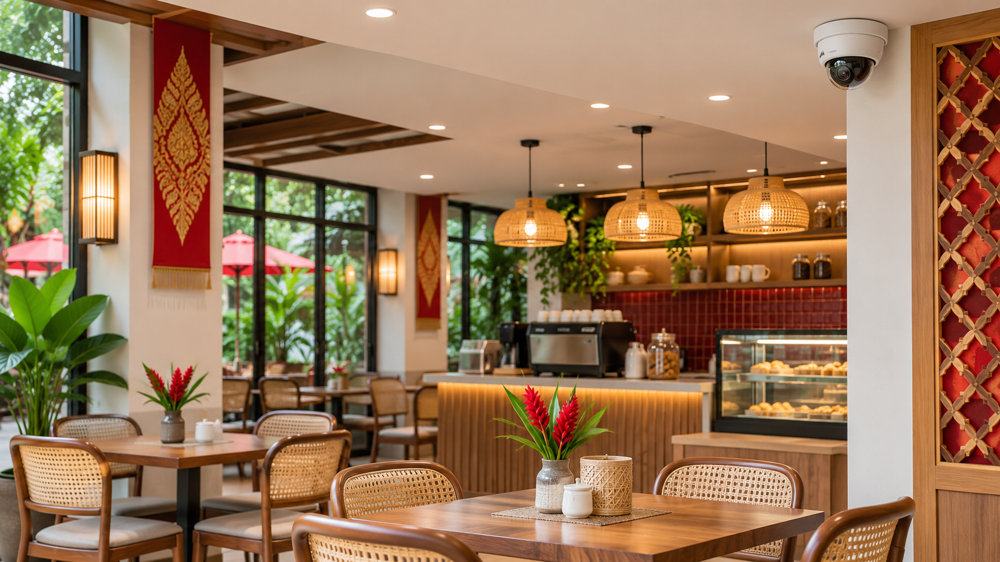
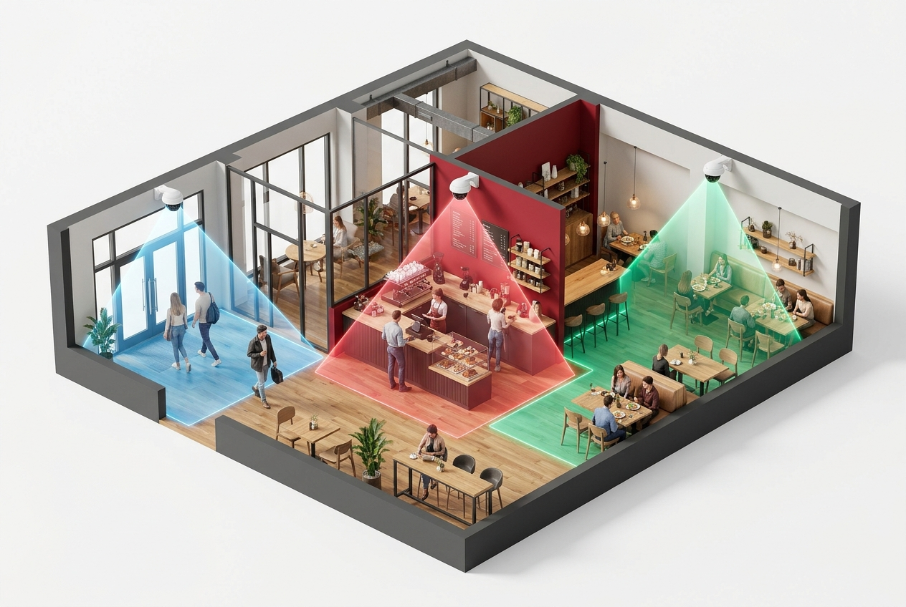
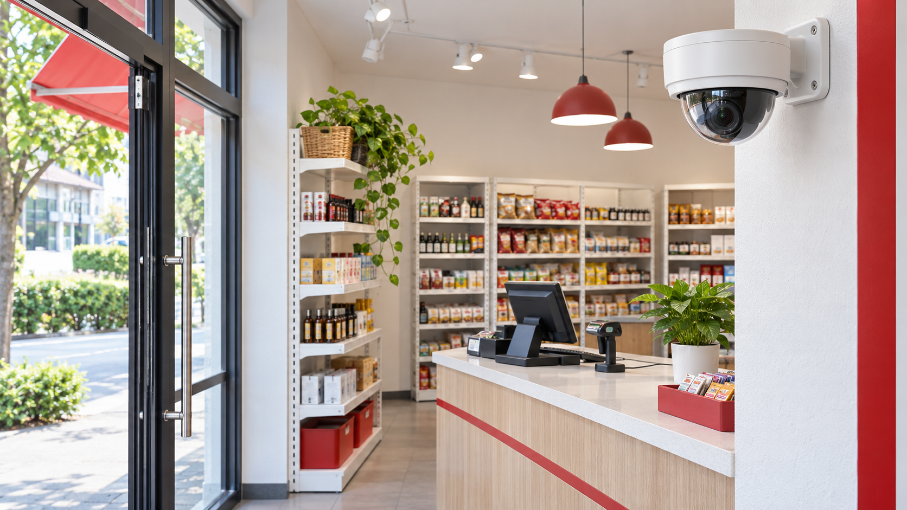
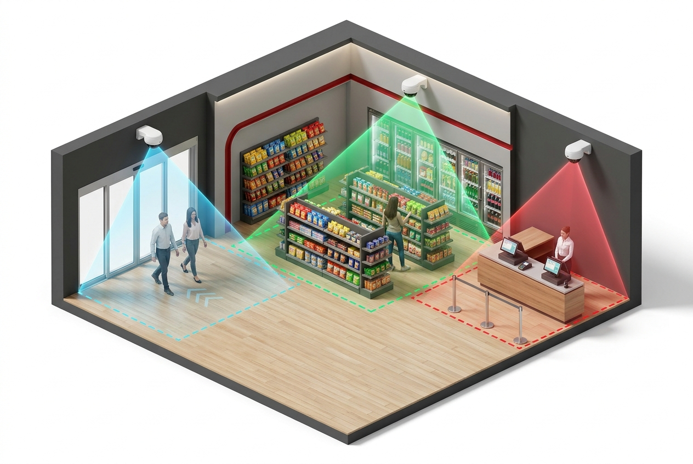
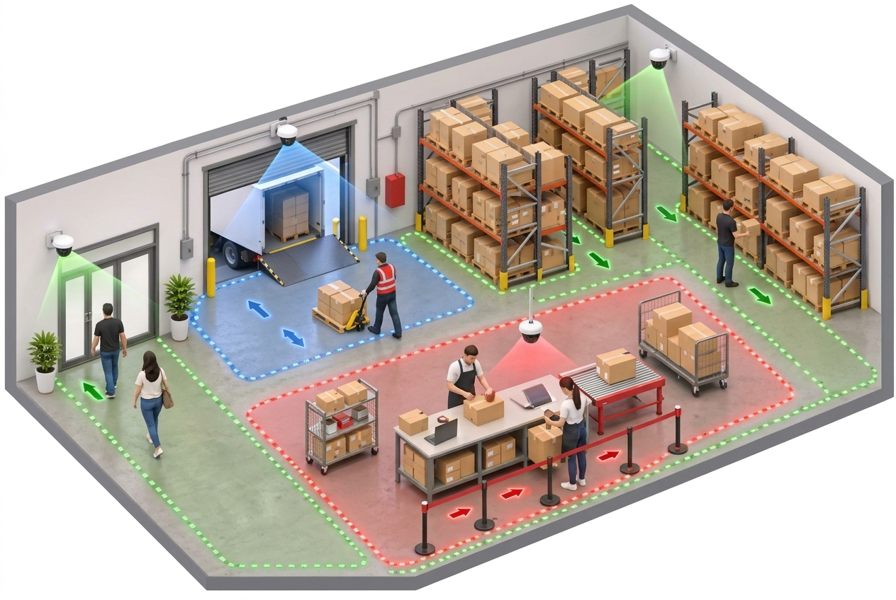
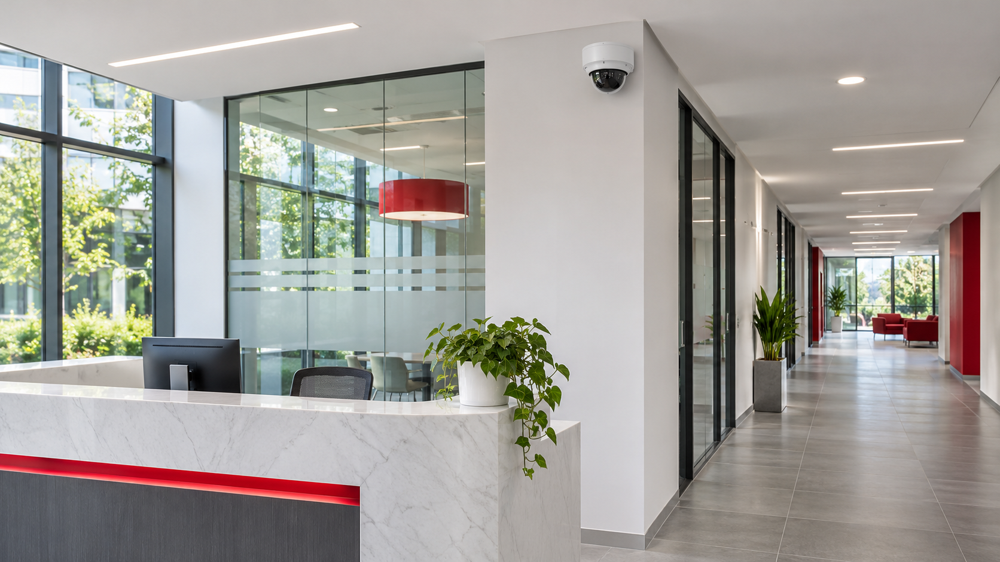
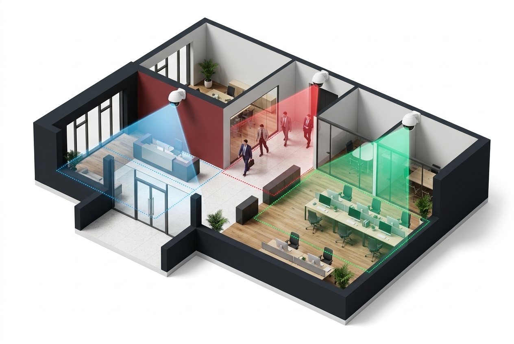

เข้าสู่ระบบและเลือกสาขา
วิธีเข้าสู่ระบบ ตรวจสอบบัญชี และเลือกสาขาที่ต้องการใช้งาน
ค้นหาคู่มือการใช้งาน วิธีแก้ปัญหากล้อง CCTV Dashboard ได้ทันที
คู่มือวิดีโอจะช่วยให้เริ่มต้น ตั้งค่ากล้อง และอ่านผลบน Dashboard ได้ง่ายขึ้น
วิธีเข้าสู่ระบบ ตรวจสอบบัญชี และเลือกสาขาที่ต้องการใช้งาน
เลือกกล้อง วาดกรอบพื้นที่ที่ต้องการให้ระบบวิเคราะห์ และตรวจสอบก่อนบันทึก
ทำความเข้าใจตัวกรอง ช่วงเวลา ตัวเลขสรุป และจุดสีบน Heatmap
แนวคิดเริ่มต้นสำหรับร้านอาหาร ร้านค้า คลังสินค้า และสำนักงาน

ร้านอาหาร · คาเฟ่เริ่มจากทางเข้า จุดชำระเงิน และพื้นที่ปฏิบัติงาน เลือกคุณสมบัติภาพให้เหมาะกับแสงของแต่ละจุด


ร้านค้าปลีกวางแผนมุมมองให้ครอบคลุมจุดเข้าออกและจุดบริการ พร้อมรับมือแสงย้อนจากหน้าร้าน

พิจารณาระยะมองเห็น สภาพแสง และสภาพแวดล้อมของพื้นที่ติดตั้งทั้งในและนอกอาคาร


สำนักงาน · อาคารออกแบบตำแหน่งติดตั้งตามพื้นที่ใช้งานจริง เลี่ยงมุมอับ และคำนึงถึงความเป็นส่วนตัว

*ค่าตัวอย่างจากความกว้างภาพแนวนอน 2,688 px ตาม DORI 2014: ระบุตัว 250 px/m, จำแนก 125 px/m, สังเกต 63 px/m, ตรวจพบ 25 px/m (คำนวณความกว้างฉาก ≈ 2,688 ÷ px/m) ไม่ใช่รัศมีหรือระยะติดตั้งตายตัว ควรเลือกเลนส์และระยะให้เหมาะ และยืนยันด้วยภาพจริง เพราะความละเอียด เลนส์ ระยะ มุมติดตั้ง และแสงมีผล อ้างอิงหลักการ DORI และ pixel density (Axis)
เป็นแนวทางเบื้องต้น ไม่ได้ระบุยี่ห้อหรือรุ่น ก่อนซื้อควรตรวจมุมติดตั้ง แสง ระยะ และความเข้ากันได้กับระบบบันทึกภาพเดิม
ขั้นตอนการตรวจสอบ RTSP Stream เบื้องต้น
ค้นหาคำตอบจากเอกสารความรู้ที่อัปโหลดไว้